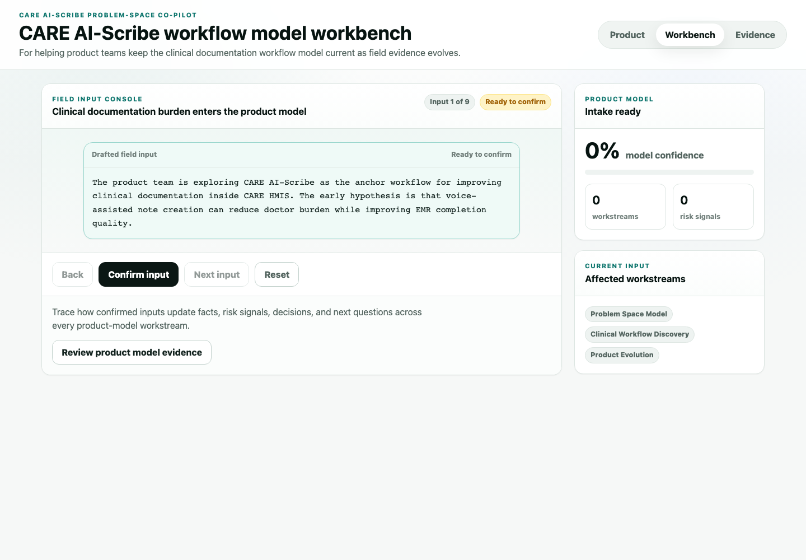

Clinical context shapes product design
OPD, ICU, ward, nursing, and TeleOPD settings can create different capture, review, correction, and submission patterns.
CARE AI-Scribe Problem-Space Co-Pilot
For helping product teams keep the clinical documentation workflow model current as field evidence evolves.

Product Problem Modeling
Consultation capture, structured note review, EMR mapping, correction effort, adoption, cost evidence, and safety controls move together.
Product Model
Voice-enabled documentation becomes valuable when consultation flow, review burden, structured data, clinical accountability, connectivity, and state-level product decisions are designed together.
OPD, ICU, ward, nursing, and TeleOPD settings can create different capture, review, correction, and submission patterns.
Clinical speech becomes more useful when notes flow into trusted EMR fields with clear review and correction paths.
Accuracy, latency, correction effort, completion quality, adoption, and cost all shape the product roadmap.
Privacy, safety, auditability, clinician training, and state-level cost evidence guide product choices over time.
Learning System
The prototype simulates how a product team can convert field inputs into evolving decisions across clinical workflow, EMR integration, AI quality, cost, governance, adoption, and value evidence.
Each input represents a plausible update from field discovery, clinicians, implementation teams, technology partners, or state stakeholders.
The co-pilot turns inputs into logged evidence, evidence needed, risk signals, decisions, and next questions.
The model confidence changes as workflow fit, AI quality, cost, adoption, and governance evidence become clearer.
Defined Workbench Flow
The workbench follows a CARE HMIS product team evolving the product model for voice-enabled clinical documentation through field evidence and product questions.
Field Input Console
Trace how confirmed inputs update facts, risk signals, decisions, and next questions across every product-model workstream.
Review product model evidenceSelected Workstream
Product Model Updated
The product model has been updated.
Product Interpretation